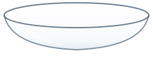
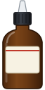
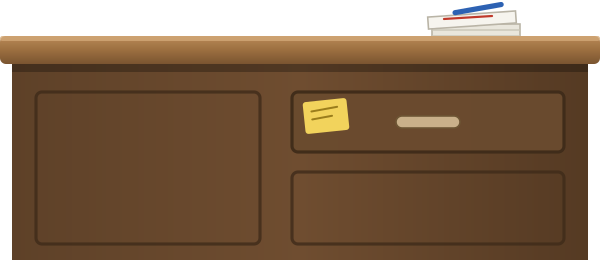

sc8.5: urglasset, dråbeflasken og luppen
Sprites

urglas.svg (væsken tegnes i koden)

draabeflaske.svg

kateder.svg (fra sc8.2)
Urglassene med væske (tegnet i js/tegning.js)
violet MnO₄⁻, grøn MnO₄²⁻, brunsten MnO₂, næsten farveløs Mn²⁺, iod og svovl med bobler
Flasken og luppen
hjemme, vendt over glasset med dråber, og luppen med 5 SO₃²⁻ (2 e⁻ hver) og 2 MnO₄⁻ (5 pladser hver)